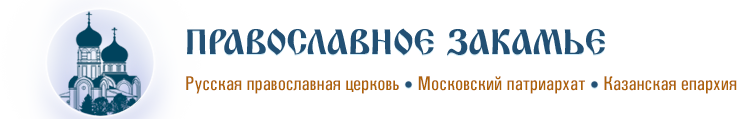
Главная новость
Заголовок первого уровня (h1)
Заголовок второго уровня (h2)
Заголовок третьего уровня (h3)
Заголовок четвертого уровня (h4)
Заголовок пятого уровня (h5)
Заголовок шестого уровня (h6)
Абзац с рисунком слева(p):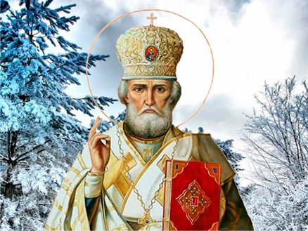Абзац — малоисследованный компонент литературной формы, имеющий композиционное, сюжетно-тематическое, ритмическое значение и связанный со стилем автора. Характерны, например, краткие абзацы в импрессионистической прозе — симптомы раздробленности, афористичности мысли; или например возвращение к длинному абзацу в несколько страниц у М. Пруста, связанное со стернианской, так называемой «спиралевидной цикличностью» его изложения. Особенно выразителен абзац у А. Белого, который выделяет в особые абзацы даже отдельные части фразы, подчёркивая этим тематическую значимость, ритмическое развитие выделяемых частей.
Абзац с рисунком справа(p):
Абзац — малоисследованный компонент литературной формы, имеющий композиционное, сюжетно-тематическое, ритмическое значение и связанный со стилем автора. Характерны, например, краткие абзацы в импрессионистической прозе — симптомы раздробленности, афористичности мысли; или например возвращение к длинному абзацу в несколько страниц у М. Пруста, связанное со стернианской, так называемой «спиралевидной цикличностью» его изложения. Особенно выразителен абзац у А. Белого, который выделяет в особые абзацы даже отдельные части фразы, подчёркивая этим тематическую значимость, ритмическое развитие выделяемых частей.
Ненумерованный список: (ul)- первый элемент
- второй элемент
- первый элемент вложенного списка
- второй элемент вложенного списка
- элемент в
две строки - элемент N
- первый элемент
- второй элемент
- первый элемент вложенного списка
- второй элемент вложенного списка
- элемент в
две строки - элемент N
- первое определение
- описание первого определения
- второе определение
- описание второго определения
| Заголовок столбца 1 | Заголовок столбца 2 | Заголовок столбца 3 |
|---|---|---|
| Ячейка 1 | Ячейка 2 | Ячейка 3 |
| Ячейка 4 | Ячейка 5 | Ячейка 6 |
Тег strong — выделение жирным, повышает вес слова для поисковых систем.
Тег b — выделение жирным, не повышает вес слова для поисковых систем.
Тег em — выделение курсивом, повышает вес слова для поисковых систем.
Тег i — выделение курсивом, не повышает вес слова для поисковых систем.
Новости закамского благочиния
-
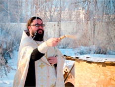
Освящено место под строительство храма
19 декабря благочинный Закамского региона протоиерей Андрей Дубровин отслужил молебен на освящение места под строительство...
Подробнее -
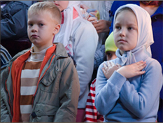
Воскресная школа приступила
ко Святым Дарам
Рождественский пост дан человеку для того, чтобы он за этот короткий промежуток времени очистил свою душу в молитве...
Подробнее -
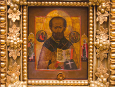
Икона с частицей мощей свт.
Николая Чудотворца
19 декабря благочинный Закамского региона протоиерей Андрей Дубровин отслужил молебен на освящение места под строительство...
Подробнеe
Публикации
-
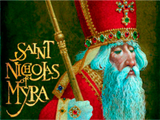
Дед Мороз – Святой Николай
– Санта Клаус
19 декабря благочинный Закамского региона протоиерей Андрей Дубровин отслужил молебен на освящение места под строительство...
Подробнее -
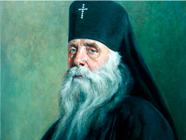
Воскресная школа приступила
ко Святым Дарам
Рождественский пост дан человеку для того, чтобы он за этот короткий промежуток времени очистил свою душу в молитве...
Подробнее -
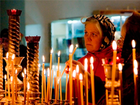
Икона с частицей мощей свт.
Николая Чудотворца
19 декабря благочинный Закамского региона протоиерей Андрей Дубровин отслужил молебен на освящение места под строительство...
Подробнеe
-
Фоторепортажи
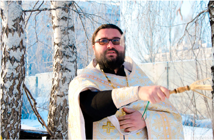 Перейти ко всем фоторепортажам... -
Видеосюжеты
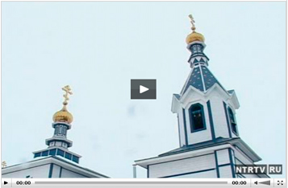 Перейти ко всем видеосюжетам...
-
Православие в татарстане
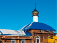В селе Старые Кутуши освятили купола
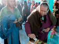В селе Старые Кутуши освятили купола
Перейти ко всем новостям...
В селе Старые Кутуши освятили купола
-
Новости Патриархии
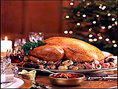В селе Старые Кутуши освятили купола
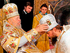В Москве пройдет пресс- конференция «Рождественский пост и новогоднее застолье — как совместить?»
Перейти ко всем новостям...В селе Старые Кутуши освятили купола